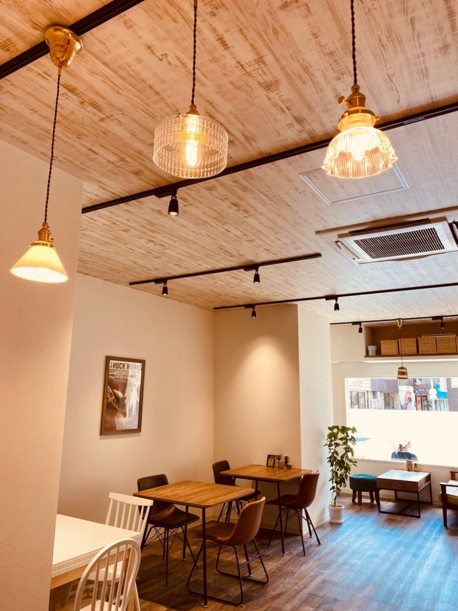
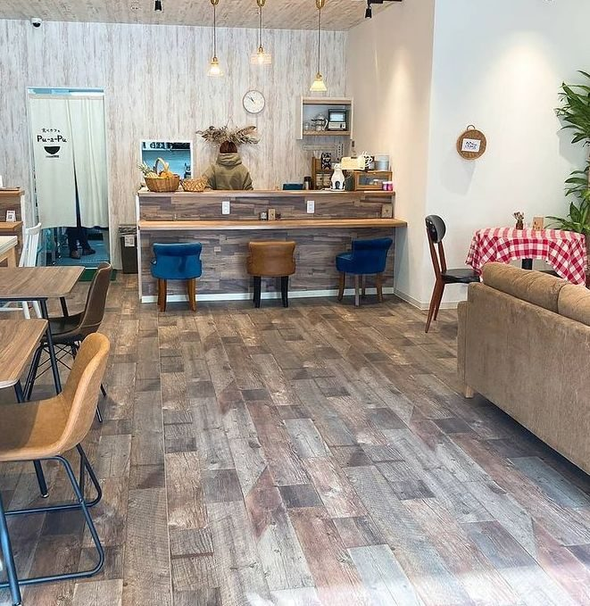
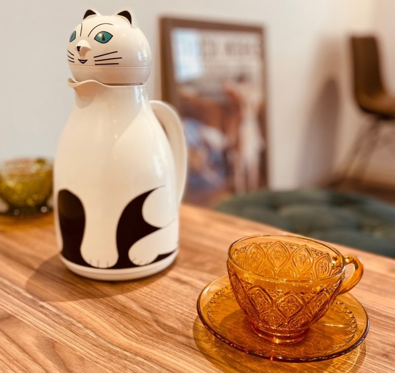

about pu-a-pu
お店について
素材から空間までこだわって作り上げる、大阪・城東区のカフェです。


taberu shiawase
食べることは、しあわせ。
身体を作っているのは、日々の食事。旬の食材を通じて季節を感じ、彩りゆたかな料理を見て、笑顔が生まれますように。手作りのぬくもりをお届けしたい。お客様の幸せが、私たちの幸せです。
kodawari
3つのこだわり

自分たちで食べて、おいしいものを
食材は、オーナー自ら全国各地を飛び回り、現地の情報を集めて、旬のものをお届けしています。「自分が食べておいしくないものはお出ししない」が、オーナーの信念です。

素材を楽しんでもらうために
焼く、茹でる、炒める、揚げる、蒸す、煮る。季節や産地によっておいしくいただくための方法を、毎回スタッフ全員で話し合ってお届けしています。

1杯1杯、おもいをこめて
コーヒーは、ご注文をいただいてから、こだわりの豆を陶器のフィルターを使って、1杯1杯ドリップしています。
for you & your family
ゆっくり過ごせる、うれしい工夫
小さなお子さま連れの方も、おひとりの方も。
- ミルク・離乳食あたためご相談ください
- 全席コンセントスマホの充電がすべての席で
- Free Wi-Fiお子さまと一緒に動画も安心
- 駐輪場お店の横に小さいですが
- お野菜カットお野菜のカットをいたします
inside
店内の様子



席数：カウンター3席、テーブル・ソファー14席
work with us
就労継続支援B型の
事業所として
pu-a-pu は、就労継続支援B型の事業所として運営しているカフェです。調理やホールなどのお仕事を、メンバーとスタッフが一緒に担っています。お客様には、ふつうのカフェとして、気軽にご利用いただけたらうれしいです。